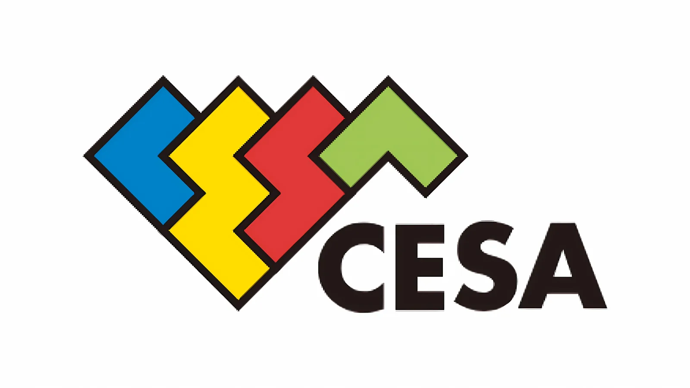

Luiso · 19 de septiembre de 2026 · 2 min de lectura
La Computer Entertainment Supplier’s Association (CESA) publicó el 17 de septiembre una edición preliminar de su informe anual sobre la industria japonesa del videojuego. El documento incluye, por primera vez, una investigación específica sobre el uso de inteligencia artificial generativa entre desarrolladores y empresas del sector.
El dato más destacado es que el 85,8 % de los desarrolladores encuestados afirmó utilizar inteligencia artificial generativa en su trabajo.
La cifra se divide entre un 63 % que declaró utilizarla habitualmente y un 22,8 % que indicó hacerlo ocasionalmente. De todas maneras, la encuesta no significa que el 85,8 % de todos los desarrolladores japoneses utilice IA, sino que corresponde a las personas que participaron en el estudio.
Entre las empresas que respondieron a la encuesta de CESA, el beneficio más esperado de la inteligencia artificial generativa fue la mejora de la eficiencia y la productividad laboral.
También aparecieron como objetivos la reducción de los tiempos de desarrollo, la disminución de costes y la facilitación de la localización y la expansión internacional.
Los resultados muestran que la adopción de estas herramientas no está limitada a la experimentación individual, sino que también forma parte de las conversaciones estratégicas de las compañías.
El informe de CESA también recoge información sobre las medidas de control utilizadas por las empresas.
La respuesta más frecuente fue la realización de revisión, corrección y supervisión humana de los resultados generados por la IA. Otras medidas incluyen limitar las herramientas disponibles y evitar que los contenidos generados se incorporen directamente a los productos sin una revisión previa.
Entre las preocupaciones principales de las compañías aparecen los derechos de autor y la propiedad intelectual.
El informe ofrece una imagen relevante sobre la adopción de IA generativa en el sector japonés, aunque sus resultados deben analizarse teniendo en cuenta la metodología.
La investigación se basa en encuestas realizadas por CESA y no representa necesariamente a todos los estudios del país ni a la totalidad de los profesionales de la industria mundial.
Además, utilizar inteligencia artificial generativa no significa necesariamente emplearla para crear imágenes, personajes o contenido final de un videojuego. Las herramientas pueden utilizarse en tareas muy diferentes, como asistencia de programación, documentación, traducción, análisis o generación de ideas.
La versión completa del informe está prevista para diciembre de 2026.